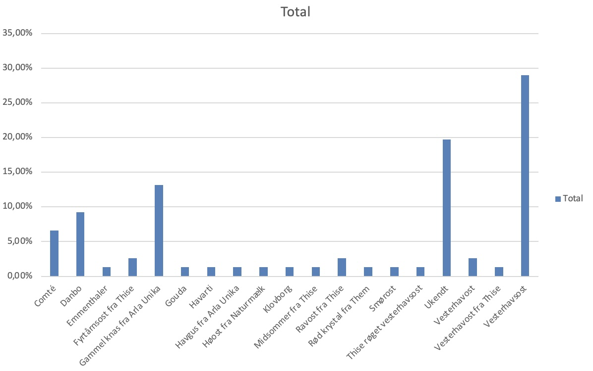

Om projektet
Denne side formidler fakta om københavnernes foretrukne valg af ost.
Vi bruger kontraster, preattentive attributes
og affordances for at gøre data let at aflæse.
Pivottabel
Vesterhavsosten har virkelig fået sit indtog på den københavnske BMO-scene

Datavisualisering 2
Prisoversigt over storkøbenhavn

Konklusion
Dataen viser, at boller med ost i [DIT OMRÅDE] generelt har høj kundetilfredshed, selvom prisen varierer mellem bagerierne.